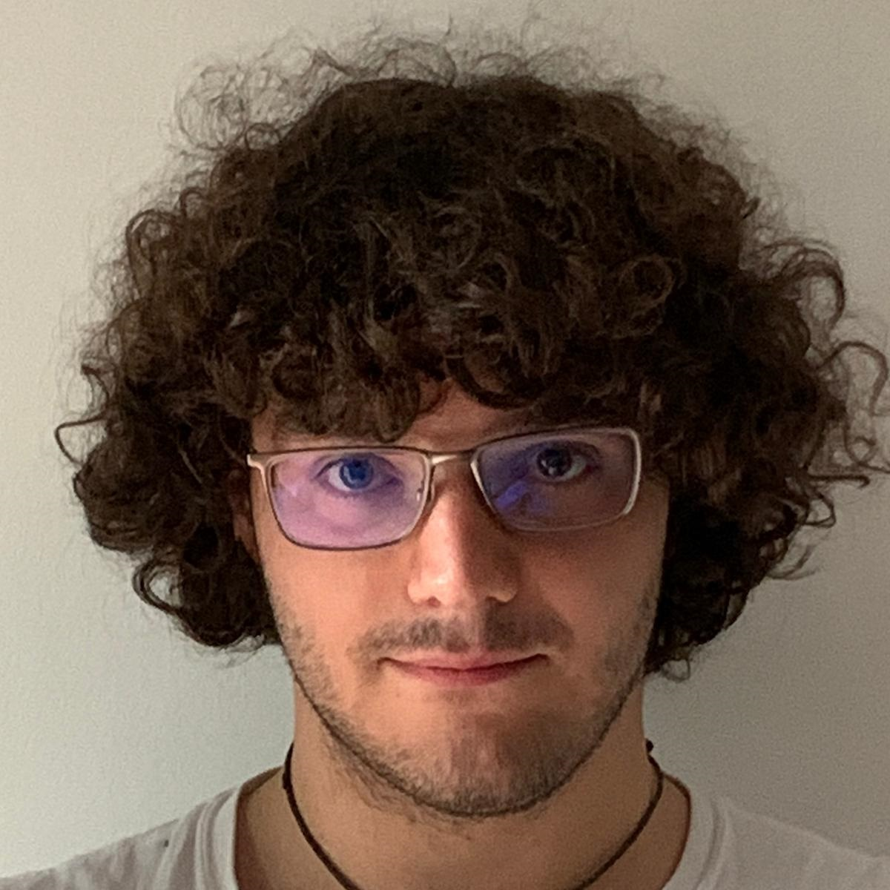
(##) Edoardo Alberto Dominici
email: edoaramis at gmail.com | [Resume](downloads/resume.pdf) | [Google Scholar](https://scholar.google.com/citations?user=dZPyoSEAAAAJ&hl=en&oi=ao) | [GitHub](https://github.com/dedoardo)
I am currently working at Animal Logic on their in-house path tracer, Glimpse. Before moving to Australia, I had a brief but intense experience at Tangent Animation in Toronto, working on a a custom fork of (Blender) Cycles.
I obtained a Master's from the University of British Columbia and am generally interested in efficient algorithms for image processing and synthesis.
During my MSc I worked on perception-driven vectorization algorithms under the supervision of [dr. Alla Sheffer](http://cs.ubc.ca/~sheffa) where I also had the amazing opportunity of having a voice in the new video game programming course.
My BSc thesis was on WebGL image retargeting under the supervision of [dr. Marco Tarini](http://tarini.di.unimi.it/).
(##) Work Experience
2021 November - Present
**R&D Rendering - Software Engineer, [Animal Logic](https://animallogic.com/)**
2021 January - 2021 October
**Rendering Engineer, [Tangent Animation](https://www.linkedin.com/company/tangent-animation)**
(##) Education
2017-2020 - MSc University of British Columbia
Thesis: [Perception-Aligned Vectorization of Raster Clip-Art](https://open.library.ubc.ca/cIRcle/collections/ubctheses/24/items/1.0389752)
Teaching Assistant:
- CPSC314: Computer Graphics (Fall '17)
- CPSC436D: Video Game Programming (Spring '18, Spring '19)
2014-2017 - BSc University of Pisa (Erasmus+ University of Stirling)
Thesis: [Practical Image Retargeting](downloads/bsc_thesis.pdf)
(##) Publications
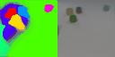
PROVIDE: A Probabilistic Framework for Unsupervised Video Decomposition
*UAI 2021*
Polina Zablotaiska, **Edoardo A. Dominici**, Leonid Sigal, Andreas Lehrmann
[paper](https://arxiv.org/abs/2006.14727)
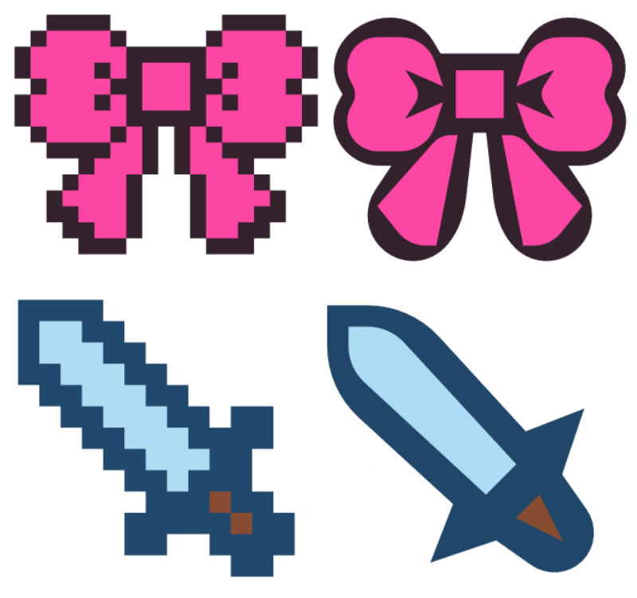
PolyFit: Perception-Aligned Vectorization of Raster Clip-Art via Intermediate Polygonal Fitting
*SIGGRAPH 2020, ACM Transactions on Graphics 39(4), DOI: 10.1145/3386569.3392401*
**Edoardo A. Dominici**, Nico Schertler, Jonathan Griffin, Shayan Hoshyari, Leonid Sigal, Alla Sheffer
[project](http://www.cs.ubc.ca/labs/imager/tr/2020/ClipArtVectorization) [code](https://github.com/dedoardo/polyfit)
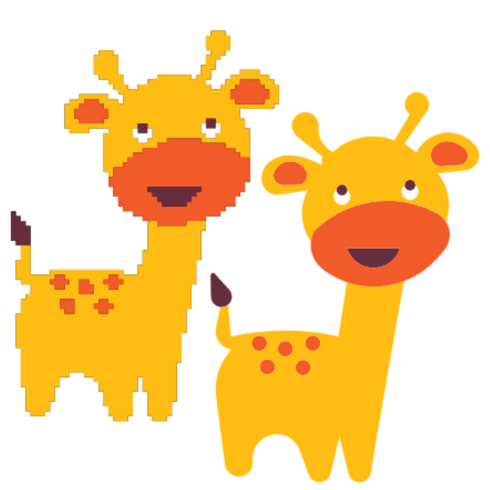
Perception-Driven Semi-Structured Boundary Vectorization
*SIGGRAPH 2018, ACM Transactions on Graphics 37(4), DOI: 10.1145/3197517.3201312*
Shayan Hoshyari, **Edoardo A. Dominici**, Alla Sheffer, Nathan Carr, Zhaowen Wang, Duygu Ceylan, I-Chao Shen
[project](http://www.cs.ubc.ca/labs/imager/tr/2018/PerceptionDrivenVectorization/) [demo](http://www.cs.ubc.ca/labs/imager/tr/2018/PerceptionDrivenVectorization/executable.zip)
(##) Code
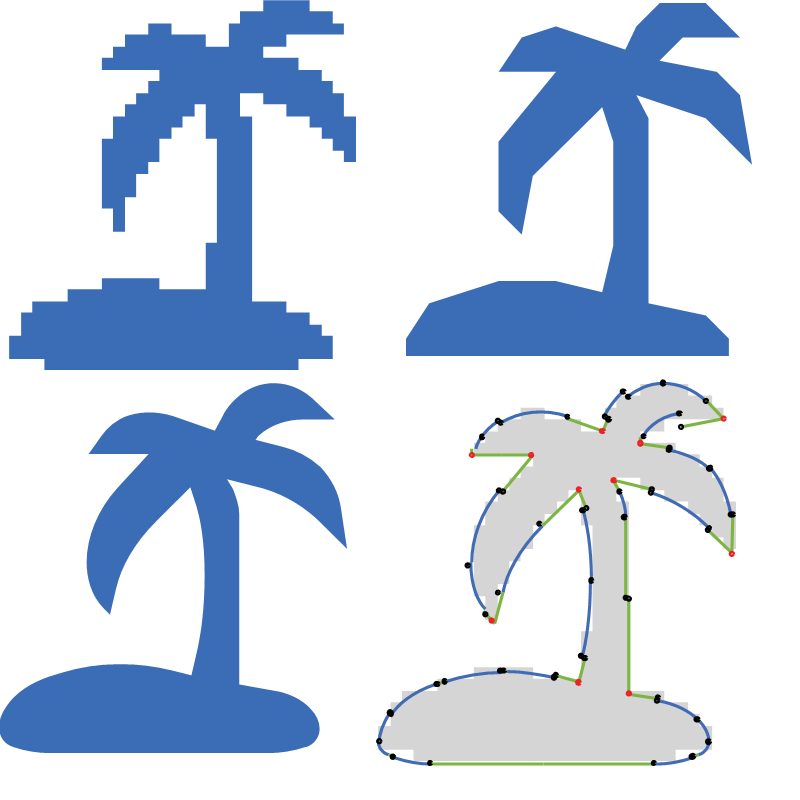
(###) PolyFit - C++14, Eigen
Vectorization research code designed for structured low-resolution clip-art. Works by first computing a perceptually optimal polygonal approximation through a shortest cycle formulation on the raster boundary. This approximation is used to guide the curve fitting and model the supervised primitive classification.
[Github](https://github.com/dedoardo/polyfit)
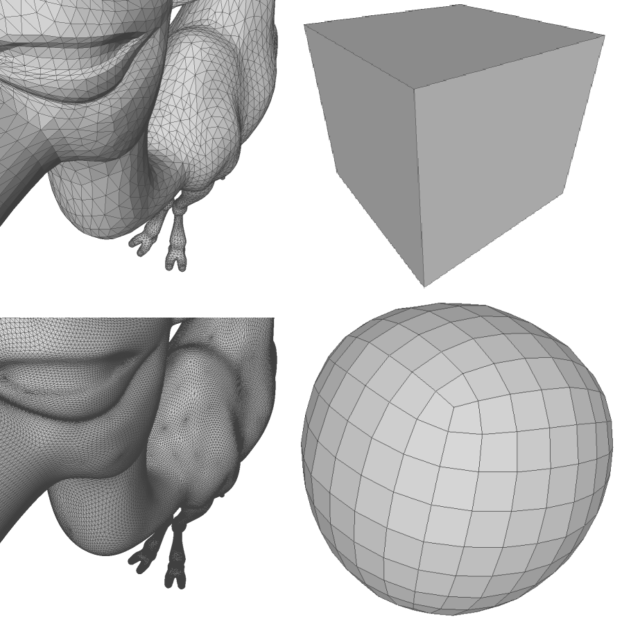
(###) Loop, Catmull-clark subdivision surfaces - C99, AVX-256
Implementation of surface subdivision schemes for triangular (Loop) and quadrilateral (Catmull-Clark) manifold meshes. Experimenting with SoA layouts and SIMD intrinsics.
[Code](downloads/subdivide.zip)
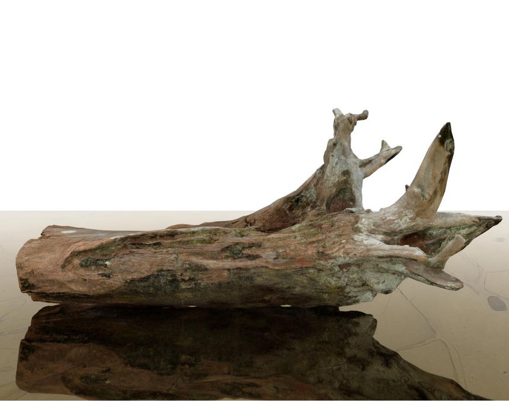
(###) Monte Carlo path tracer - C99
Unidirectional Monte Carlo path tracer supporting textures, multiple importance sampling, BSDFS (Lambertian, specular, glass) and multi-threaded rendering.
[Github](https://github.com/dedoardo/terra)
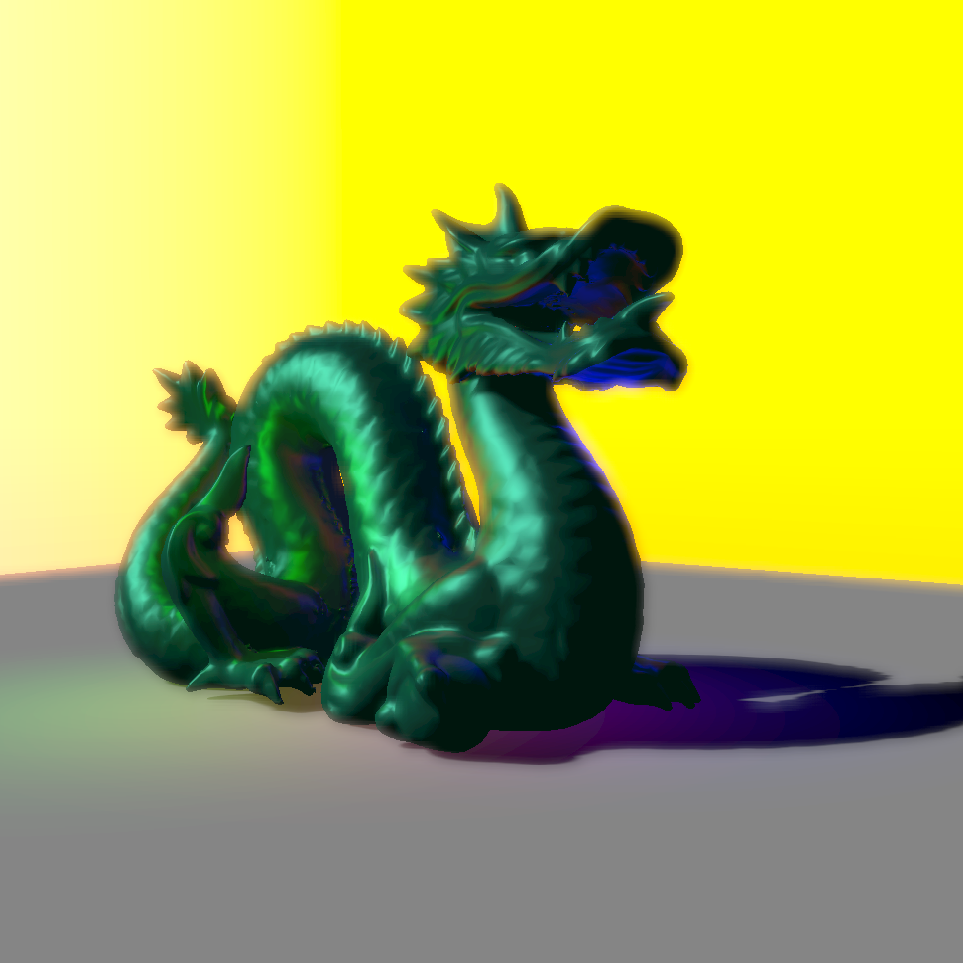
(###) Real-time renderer
Forward renderer supporting many lights through screen-space buckets, HDR pipeline with luminosity downsampling and tone mapping, shadows with PCF filtering.
[Github](https://github.com/dedoardo/tiled-renderer)
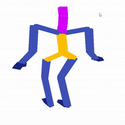
(###) Motion Graphs - Python, OpenGL
Implementation of Motion Graphs [Kovar et al '02]. Capable of loading a BVH motion sequence, correctly rendering it, identify similar motion segments and generate keyframes smoothly interpolating the two segment endpoints.
(The download is big as it includes part of the BVH CMU dataset)
[Code](downloads/motion-viewer.zip)
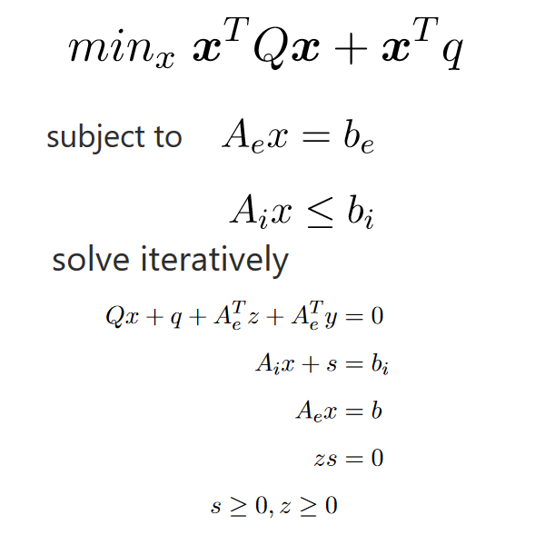
(###) Interior-point solver for constrained quadratic programming - C++, Eigen
Finds the minimizer of a quadratic function subject to equality and inequality constraints: Newton's method is applied to the KKT conditions to obtain a search direction which is then refined through Mehrotra predictor-corrector logic. I apply it to the relatively simple retargeting problem used in my BSc thesis.
[Code](downloads/retarget-solver.zip) [Course report](downloads/retarget-solver-report.pdf)
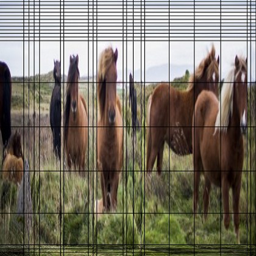
(###) WebGL image retargeting - C++, Javascript, WebGL
Stores sparse and compact retargeting solutions as EXIF metadata in JPEG images. A client-side scripts extracts the metadata replacing the image with a WebGL canvas which interpolates the closest solutions to retarget the image to the desired resolution (inferred from its style).
[Github](https://github.com/dedoardo/retarget)
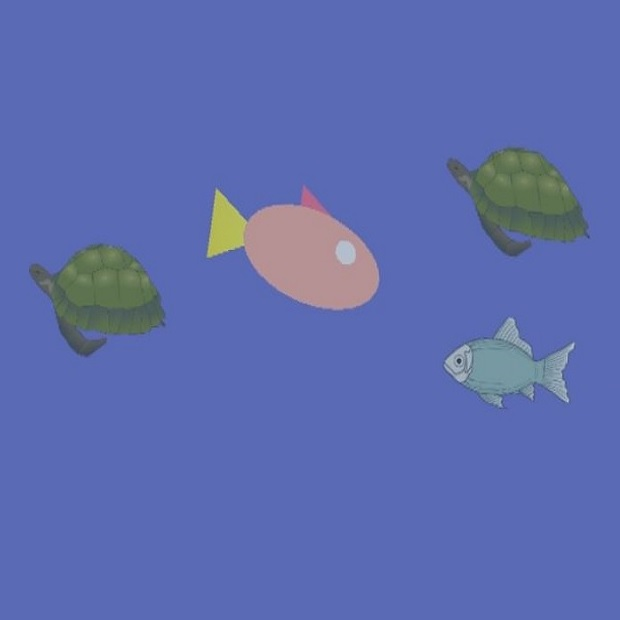
(###) OpenGL template for video game programming course - C++, OpenGL, GLFW
Skeleton game for UBC's game programming course, used as a first building block for teams games'. You are a majestic salmon on a quest for delicious fish but need to dodge deadly turtles in an impetuous sea.
[Code](downloads/template_salmon.zip)
(##) Hackatons
I participated in coding events during high-school and my undergrad studies with various degrees of success:
- [Heuristic web scraper](https://github.com/dedoardo/web2api) Python - Hackcortona 2016 (3rd)
- [SoundCube: 3D sound memory puzzle](downloads/sound_cube.zip) C++, D3D11 - Internet Festival 2015 (2nd)
- [DreamSeeker: 2D maze platformer](https://itch.io/jam/IVgamejam/rate/13476) C++, D3D11 - Indie Vault Game Jam 2015
- [Er Core Che Core: 2D sidescroller](http://2013.globalgamejam.org/2013/er-core-che-core) C++, SFML - Global Game Jam 2013
The D3D11 games were built on top of a [custom "engine"](downloads/stegosaurus.zip).
(##) Older code
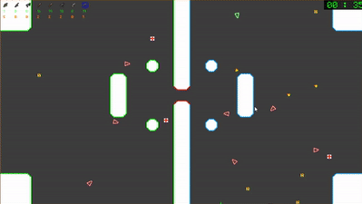
Some very old projects:
- [Python to HLSL/GLSL transpiler](https://github.com/dedoardo/pysl) - Python, HLSL, GLSL
- [Live reloading of C code through DLL hotswapping](https://github.com/dedoardo/scriptosaurus) - C99 (2015)
- [Vector Shooter](https://sourceforge.net/projects/vshooter/files/) - C++, D3D11 (2012)
- [DarkSpark: 2D top-down shooter](http://www.pygame.org/project-Dark-Spark-2388-4046.html) - Python, Pygame (2012)
*The achievement I am most proud of is [this 2012 (simple) snake game](https://web.archive.org/web/20131117180821/http://pygame.org/project/2447/) which has received 3k+ downloads. Observe the aggressive marketing attempt, despite being probably a bad example on how to write a snake clone. *